← Back to the assignment options
Screenshots: The Committee of Five
The three games and the graphic novel journal for the Declaration of Independence assignment.
Pixel-art game

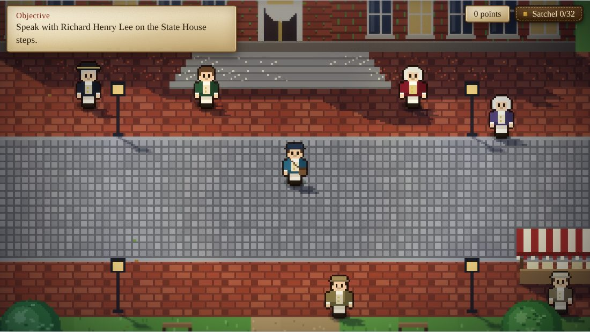

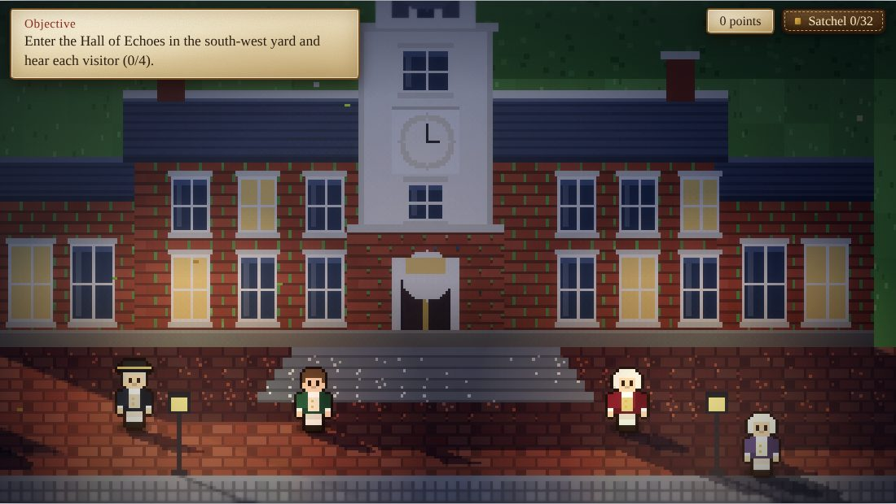
Blocky 3D game

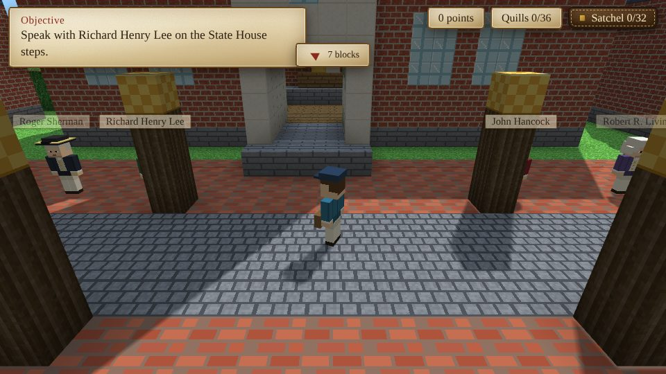

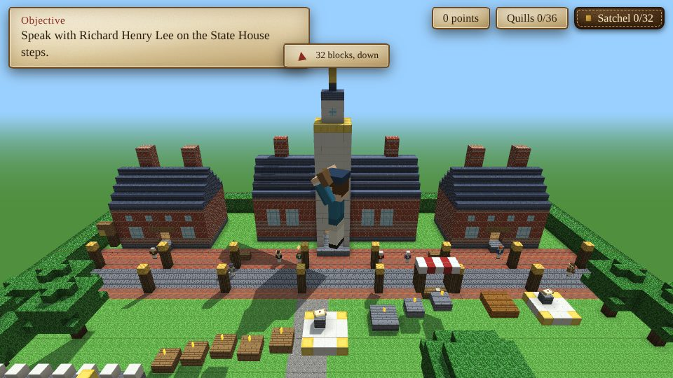

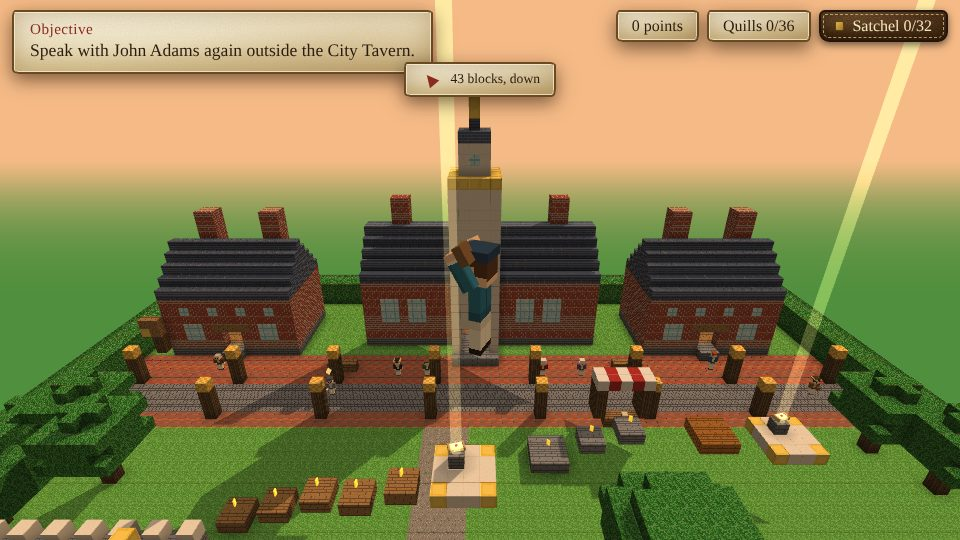
Storybook 3D game

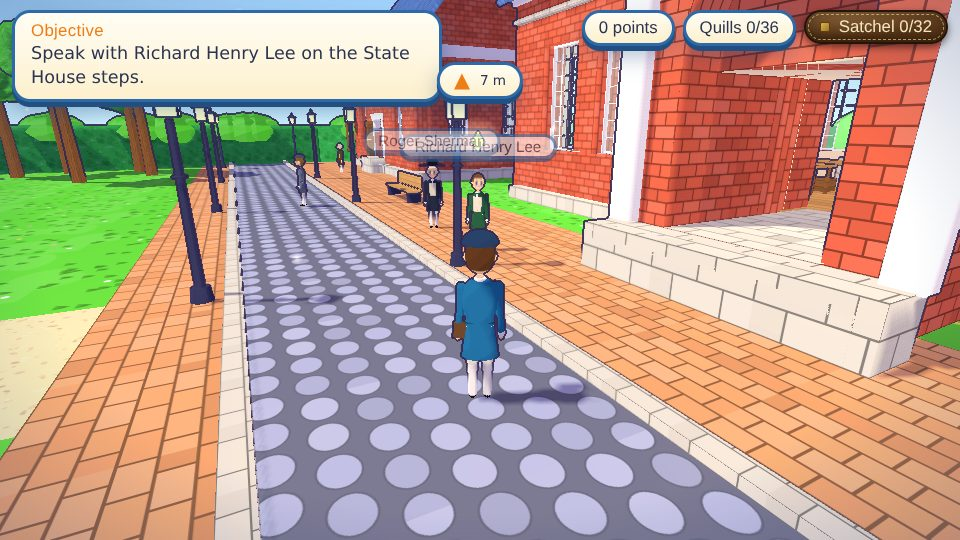

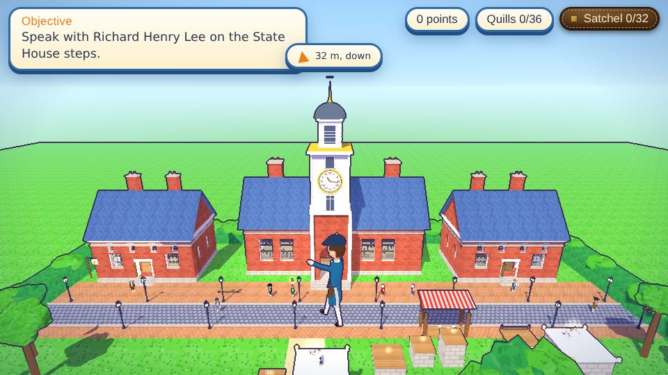

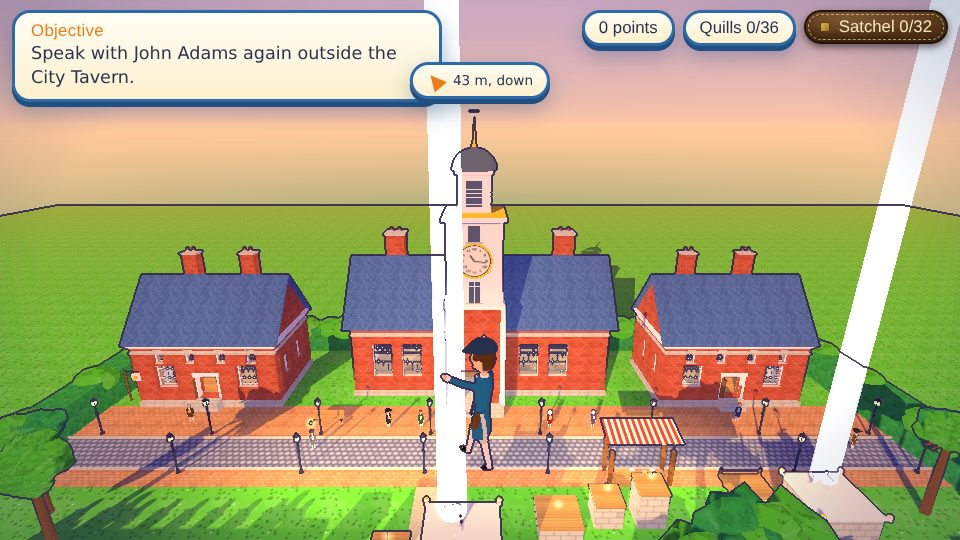
The Clerk’s Journal (graphic novel)

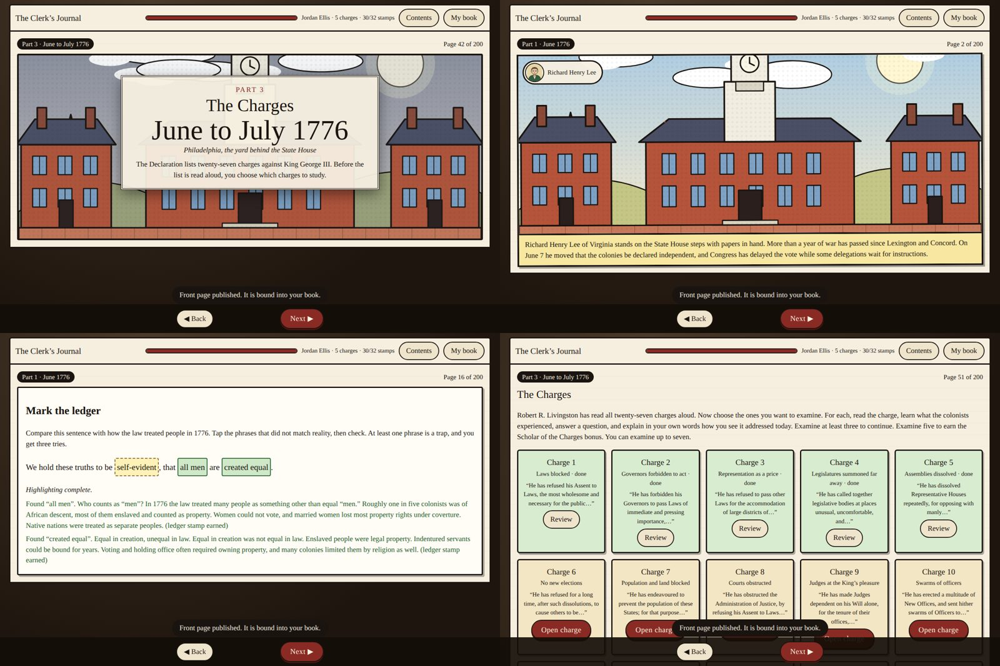

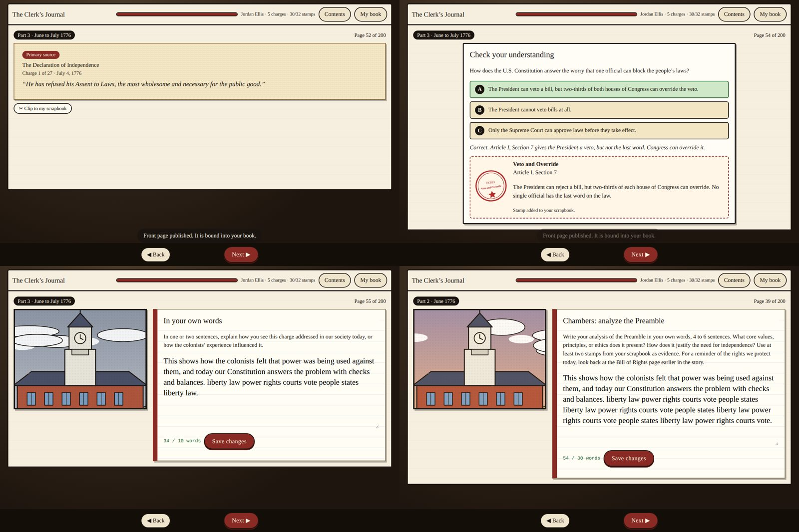

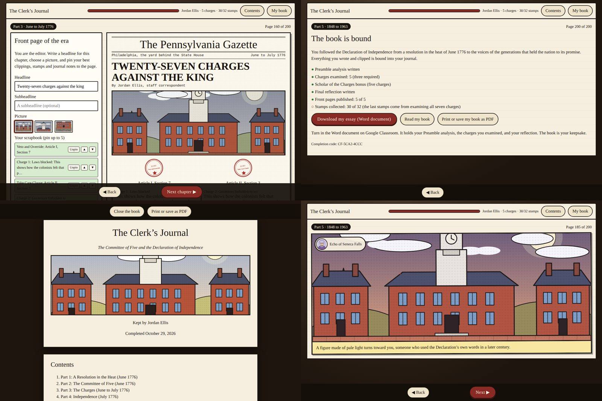